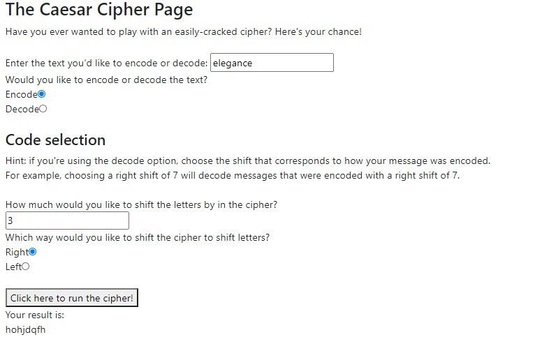

The Caesar Cipher Page
A page that encodes and decodes messages with the Caesar Cipher, created using Javascript and test-driven development.

My new challenge in creating the Caesar Cipher Page was:
- Avoiding entries that how up as "not a number".
On avoiding "not a number":
This occured when the adding/subtracting of the shift number in order to encode/decode the message resulted in a number below 1 or above 26. That's because the step I was using to convert back from numbers to letters used an array of number-letter pairs from 1 to 26, as in the alphabet.
The solution was easy enough: add 26 to numbers below 1, and subtract 26 from numbers above 26. This results in the code wrapping around when it reaches the start of end of the alphabet.
"Not a number" also occured with spaces in the message. I added an else statement to the function to replace any remaining NaN results with a space.